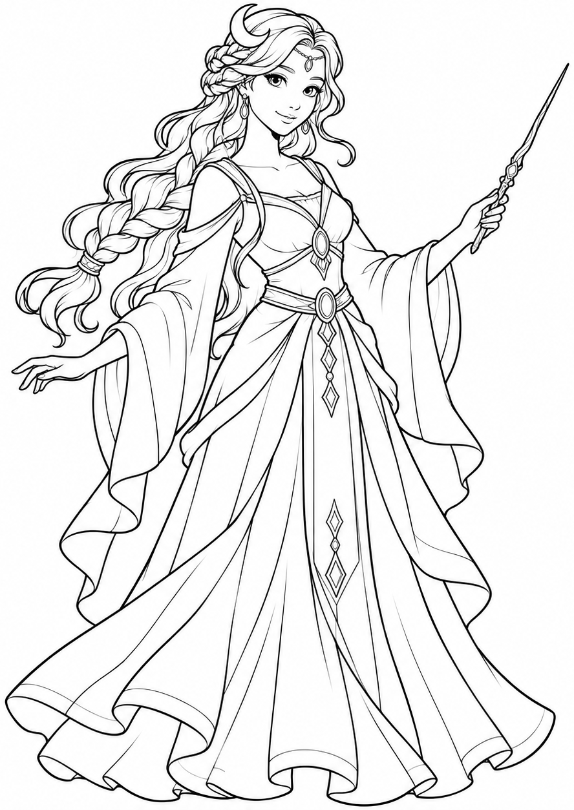
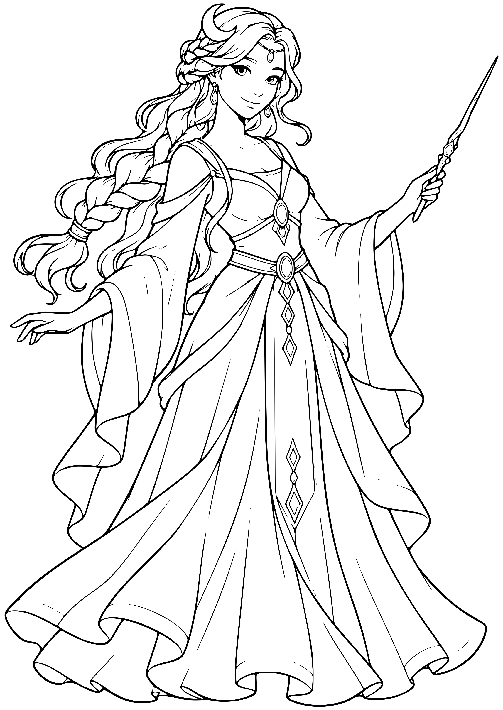
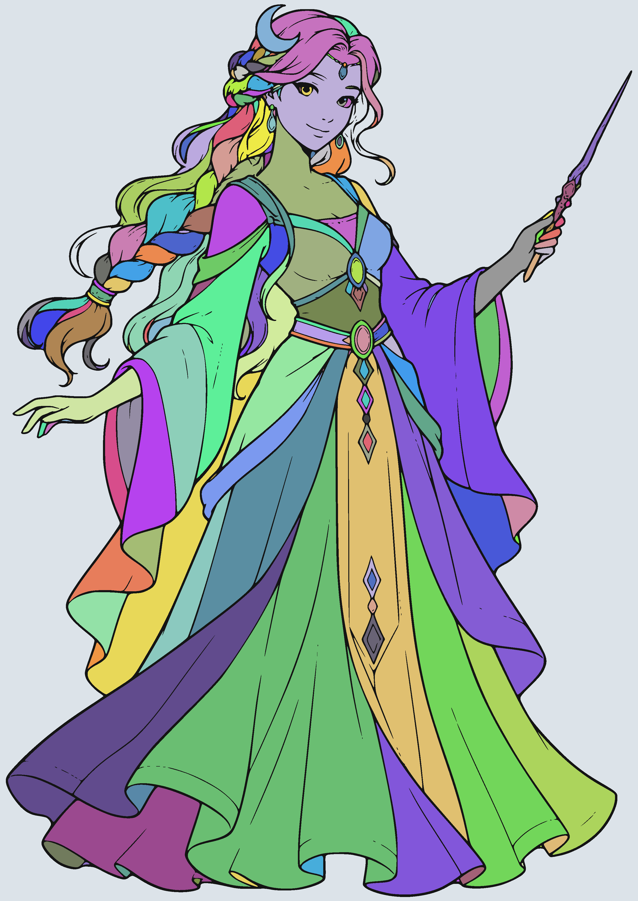
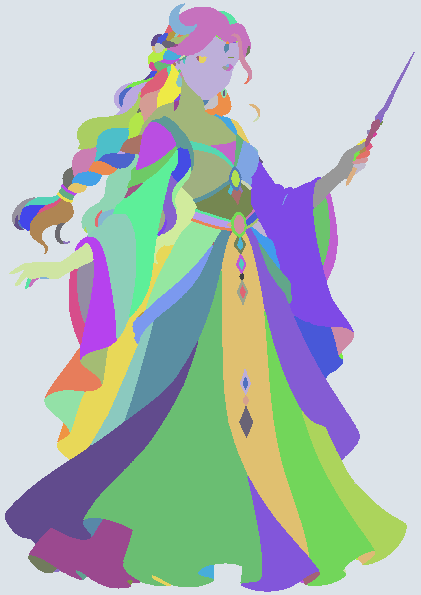
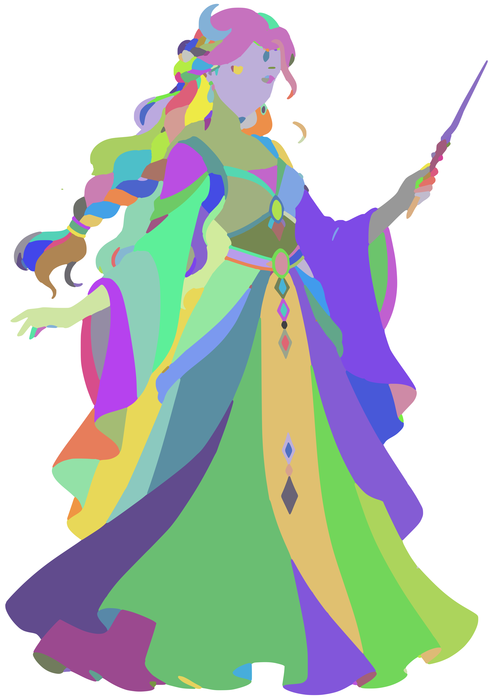
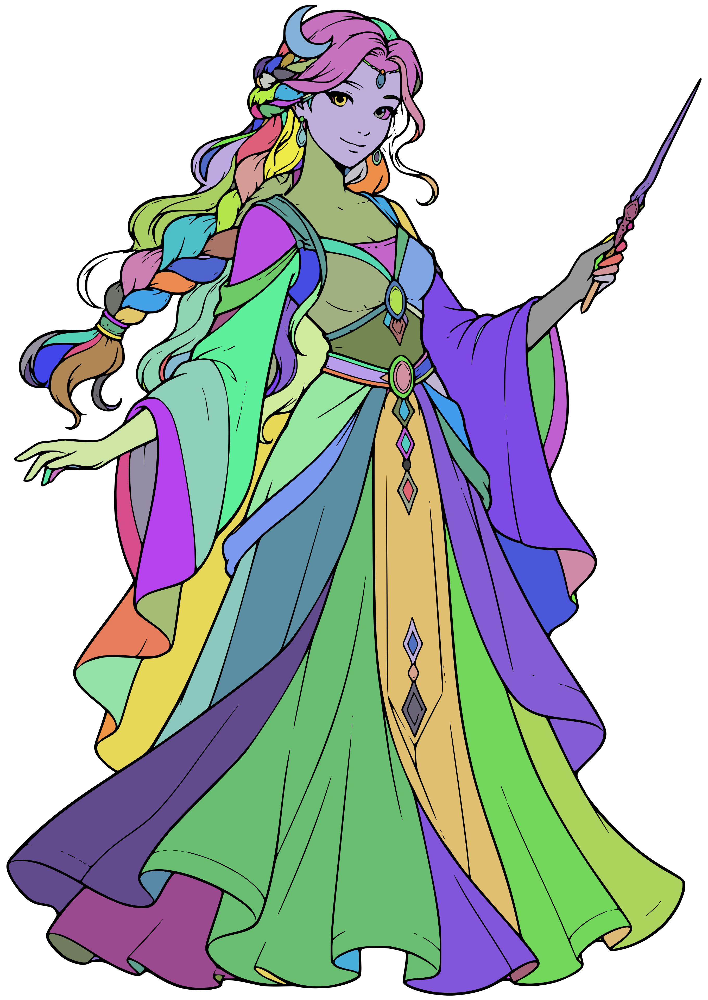

01 | Original source

Untouched source PNG.
Numbered in processing order. Click a picture for its full-resolution PNG. SVG links open the vector stage. Stages 11-13 are diagnostic views; no runtime painting is included.
Settings and path counts | Process notes
Untouched source PNG.
Crop: 888x1254+193+0. No resizing.

White background, alpha removed, grayscale. The production command performs stages 2 and 3 together.
Gaussian blur sigma 0.12 source pixels.
50% threshold. PNG is an exact view of the accompanying PBM passed to Potrace.
Open actual PBM133 black-filled paths, 338 closed contours. White is transparent; no region paths yet. PNG shown on white.
Open SVG
2720 x 3840; 8 samples per logical unit. Exact grayscale pixels used for discovery.
Open SVG
212 regions, shown in diagnostic colors. Black = ink barrier; pale gray = outside. Colors are IDs, not paint.

Same categorical region labels after propagation into the ink, approaching its centerline. No ink overlay, so the boundaries are visible.
212 white region paths plus 133 original ink paths. Exact current builder output.
Open SVGDiagnostic view: the final white region paths without ink, on a contrasting background. This is their union, not a separately generated silhouette.
Open SVG
Diagnostic view: each final SVG region gets the same ID color as stages 8 and 9. Ink hidden to expose gaps/overlaps.
Open SVG
Diagnostic view: stage 12 with the original black ink drawn on top.
Open SVG